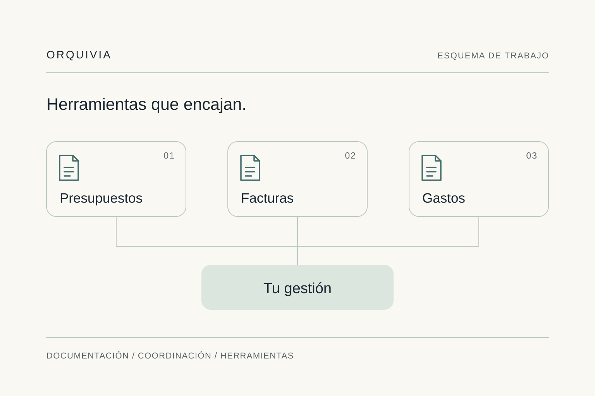

Arquitectura y retail
Documentación que
todos puedan interpretar.
Organizar planos y establecer criterios comunes para consultar y compartir la documentación entre proyectos.
Ver el servicioDónde encaja Orquivia
Trabajamos con empresas y equipos que gestionan proyectos, encargos o consultas. Partimos de una necesidad concreta y desarrollamos una respuesta adaptada a su forma de trabajar.
Arquitectura y retail
Organizar planos y establecer criterios comunes para consultar y compartir la documentación entre proyectos.
Ver el servicio
Project managers y postventa
Herramientas de seguimiento adaptadas al equipo. Hemos creado una aplicación para gestionar consultas de forma visual desde un plano.
Ver el servicio
Pequeños negocios
Aplicaciones para presupuestos, facturas y gastos que parten del ritmo de trabajo y los procesos de cada empresa.
Ver el servicio
Actuaciones concretas
Organizar recursos, participantes y tiempos para ejecutar una actuación con un alcance y una entrega definidos.
Ver el servicioEmpezamos por escucharte
En 15 minutos situamos una tarea concreta y el resultado que buscas. No hace falta preparar una presentación ni explicar toda tu empresa.
Exploremos tu proyecto